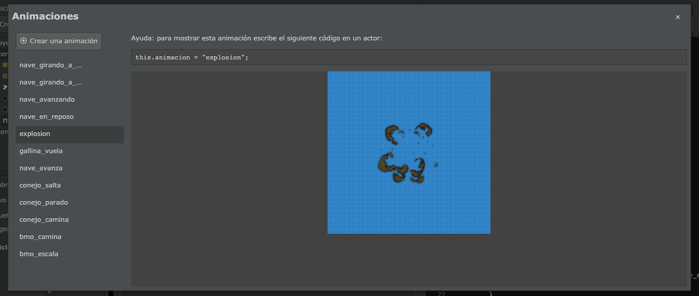
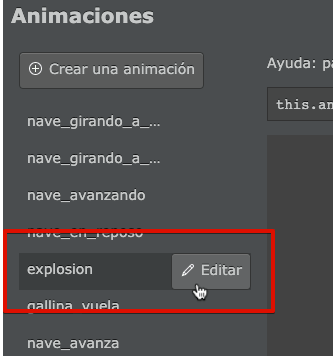
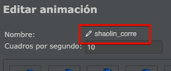

Para crear animaciones se tiene que utilizar el editor que aparece en la parte superior de la pantalla:
Este botón abrirá una ventana en donde se pueden previsualizar todas la animaciones del proyecto:

Estas animaciones también se pueden editar fácilmente, solo tienes que pasar el mouse sobre el nombre de la animación y pulsar el botón “editar”:

Las animaciones son simplemente una lista de imágenes que pilas mostrará una detrás de la otra, a determinada velocidad. Vas ver toda esta información en el editor de animaciones:

Para crear animaciones hay que pulsar el botón “Crear una animación”:

y luego cargar cada uno de los cuadros de animación pulsando el botón “+” que aparece en la parte superior de la ventana:

Por ejemplo, aquí incluí algunos cuadros de animación de un personaje corriendo:

Puedes utilizar el botón “Reproducir” y la propiedad “Cuadros por segundo” para ajustar la velocidad de la animación y dejarla como quieras:

Por último es muy importante que le asignes un nombre a la animación, por ejemplo “shaolin_corre”:

Esto es muy importante porque tu juego puede tener un montón de animaciones, y el nombre que le asignes será la única forma de identificar cada una de las animaciones.
Ahora sí, puedes cerrar la ventana del editor y continuar con la siguiente sección.
Una vez que tienes creada la animación, lo único que hace falta es copiar el código que aparece como ayuda en el visor de animaciones dentro del código:

Ese código, sirve para indicarle al actor qué animación tiene que reproducir. Por ejemplo, si quieres que el actor muestre esta animación al comenzar deberías colocarlo dentro de la función “iniciar” así:

Las animaciones siempre se muestran de forma cíclica, es decir, cuanto terminan vuelven a empezar desde cero. Si tu animación es tradicional, como un personaje caminando, no tienes que hacer nada adicional para que continue la animación automáticamente.
Si quieres detectar el momento exacto cuando la animación llega a su final, deberías crear un método llamado cuando_finaliza_animacion y colocar ahí algún código para reaccionar ante la finalización de la animación. Por ejemplo, el actor “explosión” se elimina de la pantalla automáticamente cuando finaliza su animación:
class explosion extends Actor {
// Otros métodos
cuando_finaliza_animacion(nombre: string) {
this.eliminar();
}
}Para mostrar una animación en un actor tenemos que asignar un valor al atributo animación así:
Esto hará que la animación se muestre de forma contínua. Si queremos hacer un uso manual, primero tenemos que pausar la animación así:
Una vez ahí, podemos hacer que la animación avance manualmente llamando al método “actualizar_animacion”:
Este método también admite un parámetro para controlar la velocidad, estos son algunos ejemplos de invocación:
// para reproducir la animación al doble de velocidad:
this.actualizar_animacion(2);
// para reproducir la animación a la mitad de velocidad:
this.actualizar_animacion(1/2);
// para reproducir la animación en reversa
this.actualizar_animacion(-1);
// para reproducir la animación en reversa muy lentamente, 5
// veces más lento de lo normal
this.actualizar_animacion(-1/5);Una vez finalizado el manejo de las animaciones de forma manual, se puede llamar al siguiente método para continuar con la animación desde donde quedó: